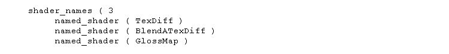
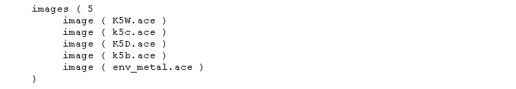
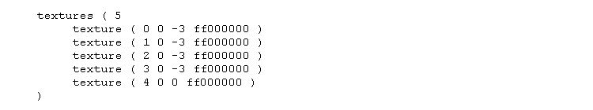
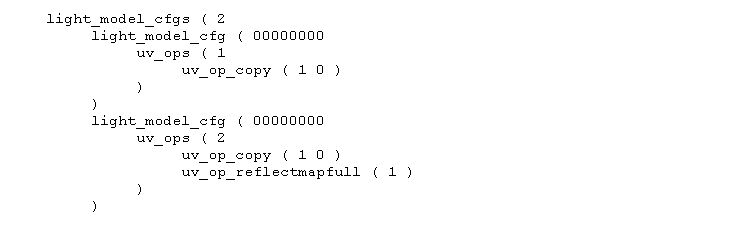
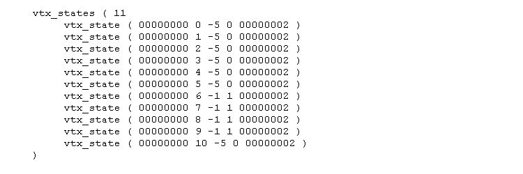
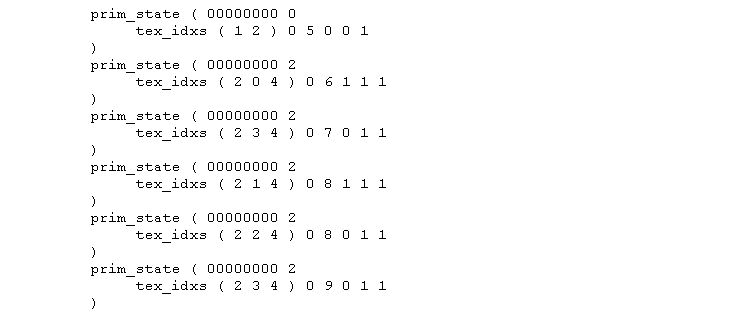

This is environment mapping (behaves a bit like a reflection) on flat textures.
Prerequisites:
*********************************************************************************
*** To enable this, app.fbk in the main trainsim folder needs a small patch ***
- open the file with wordpad;
- look for:
shader_cfgs (
22
- change to:
shader_cfgs (
23
*********************************************************************************
We need an environment map texture - this is just a normal ACE file of a scene as if viewed through a fisheye lens, but chopped into quarters and each quarter then swapped diagonally - this'll sort the men from the boys :)
It does not need to be big - 64x64 will do, less detail is better.
We need an uncompressed S file and a good understanding of which parts are linked to which matrix node. This depends on the author of the model.
The shape viewer hierarchy view option may help here.
The Process:
Now open up the uncompressed S file with a unicode editor (Wordpad, notepad, Context etc).
- look for the "shader_names" section near the top and add an extra line for GlossMap and add one to the shader_names count.

- make a note of the shader number you added starting from zero - in the case above, the shader is 2;
- Search for the "images" section, add a line for the new env map ace (and increment the images count)

- again, note the sequence number from 0 and add a texture line in the next section where the first parameter is the new image number. The 3rd parameter doesn't need to be -3 as this just sharpens the texture - not necessary for the env map (and increment the textures count)

- change the light_model_cfgs section to add a new config (sequence number 1) (and increment the light_model_cfgs count to 2)

- Alter the vtx_states section:
The number after the first 00000000 is the matrix sequence number - if the modeller has been kind, these will give a clue as to which parts are going to be changed.
In my example below, these correspond to buffers, boiler, cab and "bits".
The 3rd number is usually -5 to -12 where -5 is normal, -6 is low specualar shine and -7 is high specular shine.
For the ones you want to convert, change -5, -6 or -7 to -1 and change the 4th parameter to the new light_model_cfg (1)

- Now scan through the prim_states section to find the ones where the vtx_state sequence (6,7,8 and 9 from above) is the second parameter after the tex_idxs() - they may appear more than once.
For each of these, change the tex_idx first parameter to 2 and add a 3rd parameter of the env map texture sequence number (4)
Change the second to last parameter to the new light_model_cfg (1) and change the second parameter after prim_state to the new named shader (2)

- change the last parameter of every sub-object header for every distance level in the S file (could be several) to 000002c4:
sub_object_header ( 00000000 -1 -1 000001d2 000002c4
- Also just below this for each distance level, add one to the first parameter of the following lines and add the new shader sequence and new light model cfg sequence as the last parameter.
subobject_shaders ( 3 0 1 2 )
subobject_light_cfgs ( 2 0 1 ) 0
This shader is additive to the current texture - this means when the texture is dark at night, it still adds. Consequently it glows in the dark.
The only way around this at the moment is to use a very dark env map. This makes the reflective effect more subtle which probably looks better anyway.